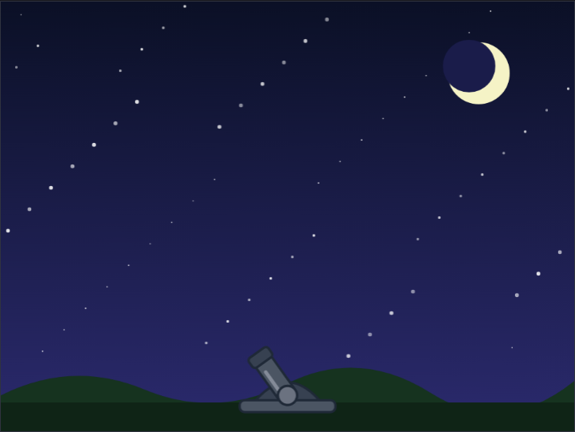
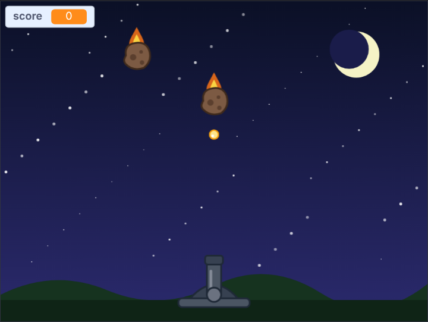

<title>Sky Guard Tutorial</title>
<meta name="claude:viewport-fit-sides" content="cover">
<link rel="preconnect" href="https://fonts.googleapis.com">
<link rel="stylesheet" href="https://fonts.googleapis.com/css2?family=Fredoka:wght@500;600&family=Atkinson+Hyperlegible:ital,wght@0,400;0,700;1,400&family=JetBrains+Mono:wght@400&display=swap">
<style>
/* Layout: one reading column; each step is a numbered section: the big idea, the blocks, a picture and a checkpoint file. */
:root {
  --bg: #f4f3fa; --surface: #ffffff; --fg: #1f1d33; --muted: #5c5a74; --line: #dddbea;
  --accent: #3b3f9e; --accent-soft: #e6e6fa; --drone: #d97706; --code-bg: #f8f7fd;
  --display: "Fredoka", "Trebuchet MS", system-ui, sans-serif;
  --body: "Atkinson Hyperlegible", "Segoe UI", system-ui, sans-serif;
  --mono: "JetBrains Mono", ui-monospace, Consolas, monospace;
}
@media (prefers-color-scheme: dark) { :root:not([data-theme="light"]) {
  --bg: #13121f; --surface: #1c1a2c; --fg: #ebe9f7; --muted: #a6a3bf; --line: #312e47;
  --accent: #a5a8ff; --accent-soft: #23244a; --drone: #fbbf24; --code-bg: #232036; color-scheme: dark; } }
:root[data-theme="dark"] {
  --bg: #13121f; --surface: #1c1a2c; --fg: #ebe9f7; --muted: #a6a3bf; --line: #312e47;
  --accent: #a5a8ff; --accent-soft: #23244a; --drone: #fbbf24; --code-bg: #232036; color-scheme: dark; }

body { background: var(--bg); color: var(--fg); font: 18px/1.6 var(--body);
  padding-left: max(16px, env(safe-area-inset-left, 0px)); padding-right: max(16px, env(safe-area-inset-right, 0px)); padding-block: 40px 72px; }
main { max-width: 760px; margin: 0 auto; display: grid; gap: 48px; }
main > *, .step > *, .stack > *, .intro > * { min-width: 0; }
h1, h2, h3 { font-family: var(--display); font-weight: 600; text-wrap: balance; margin: 0; line-height: 1.15; }
h1 { font-size: clamp(2rem, 6vw, 2.9rem); }
h2 { font-size: 1.7rem; }
h3 { font-size: 1.15rem; font-weight: 500; }
p { margin: 0; max-width: 66ch; }
a { color: var(--accent); }
code { font: 0.88em var(--mono); background: var(--code-bg); padding: 1px 5px; border-radius: 4px; overflow-wrap: anywhere; }
.eyebrow { font: 600 0.78rem var(--body); letter-spacing: 0.08em; text-transform: uppercase; color: var(--drone); }
.stack { display: grid; gap: 16px; min-width: 0; }
.intro { display: grid; gap: 14px; }
.intro p { color: var(--muted); font-size: 1.08rem; }

.plan { list-style: none; margin: 0; padding: 0; display: grid; gap: 6px; counter-reset: plan; }
.plan li { display: flex; flex-wrap: wrap; align-items: baseline; gap: 4px 12px; padding: 8px 12px; border-radius: 6px; counter-increment: plan; }
.plan li::before { content: counter(plan); font: 600 0.95rem var(--display); color: var(--muted); width: 1.4em; }
.plan .name { font-weight: 700; }
.plan a { text-decoration: none; }
.plan a:hover .name, .plan a:focus-visible .name { text-decoration: underline; }
.plan .what { color: var(--muted); flex: 1 1 220px; }

.step { display: grid; gap: 20px; border-top: 2px solid var(--line); padding-top: 32px; }
.step-head { display: flex; align-items: center; gap: 14px; }
.num { flex: none; width: 44px; height: 44px; border-radius: 50%; display: grid; place-items: center;
  background: var(--accent); color: var(--surface); font: 600 1.3rem var(--display); }
ol.do { margin: 0; padding-left: 1.3em; display: grid; gap: 8px; max-width: 66ch; }

.blocks-panel { background: var(--surface); border: 1px solid var(--line); border-radius: 8px; padding: 16px; overflow-x: auto; }
.blocks-panel .label { font: 700 0.78rem var(--body); letter-spacing: 0.06em; text-transform: uppercase; color: var(--muted); margin-bottom: 8px; }
pre.blocks { margin: 0; font: 13px var(--mono); white-space: pre; }

.note { border-left: 3px solid var(--drone); padding: 2px 0 2px 14px; color: var(--fg); }
.note b { color: var(--drone); }
figure { margin: 0; display: grid; gap: 8px; }
figure img { width: 100%; border-radius: 8px; border: 1px solid var(--line); display: block; }
figcaption { font-size: 0.9rem; color: var(--muted); }

.table-wrap { overflow-x: auto; }
table { border-collapse: collapse; font-variant-numeric: tabular-nums; min-width: 420px; }
th, td { text-align: right; padding: 6px 14px; border-bottom: 1px solid var(--line); }
th:first-child, td:first-child { text-align: left; }
th { font-size: 0.82rem; color: var(--muted); font-weight: 700; }

.checkpoint { display: flex; flex-wrap: wrap; align-items: center; gap: 10px 16px; background: var(--surface);
  border: 1px solid var(--line); border-radius: 8px; padding: 12px 16px; }
.checkpoint p { flex: 1 1 260px; color: var(--muted); font-size: 0.95rem; }
.btn { display: inline-block; font-weight: 700; text-decoration: none; color: var(--surface); background: var(--accent);
  padding: 8px 16px; border-radius: 6px; white-space: nowrap; }
.btn:hover, .btn:focus-visible { outline: 3px solid var(--accent-soft); outline-offset: 1px; }
.try { margin: 0; padding-left: 1.3em; display: grid; gap: 6px; }
svg.coords text { font: 11px var(--body); fill: var(--muted); }
.scripts { display: flex; flex-wrap: wrap; gap: 12px; align-items: flex-start; }
.scripts .blocks-panel { flex: 0 1 auto; max-width: 100%; min-width: 0; }
.tag { font-size: 0.7rem; font-weight: 700; letter-spacing: 0.04em; padding: 1px 7px; border-radius: 999px; margin-left: 6px; }
.tag.new { background: var(--accent); color: var(--surface); }
.tag.changed { border: 1px solid var(--drone); color: var(--drone); }
.flow { list-style: none; margin: 0; padding: 0; display: flex; flex-wrap: wrap; gap: 8px; counter-reset: none; }
.flow li { display: grid; gap: 2px; padding: 10px 14px; border-radius: 8px; background: var(--surface); border: 1px solid var(--line);
  flex: 1 1 130px; min-width: 0; position: relative; }
.flow li b { font: 600 1.05rem var(--display); color: var(--accent); }
.flow li span { font-size: 0.85rem; color: var(--muted); }
footer { color: var(--muted); font-size: 0.92rem; border-top: 2px solid var(--line); padding-top: 24px; }
.idea { background: var(--accent-soft); border-radius: 8px; padding: 12px 16px; display: grid; gap: 4px; max-width: 66ch; }
.make { display: grid; gap: 4px; max-width: 66ch; font-size: 0.95rem; }
.make b { color: var(--drone); }
.idea b { font: 600 1rem var(--display); color: var(--accent); }
</style>

<main>
  <header class="intro">
    <span class="eyebrow">Scratch tutorial for kids (8+) · 4 short steps · basic blocks only</span>
    <h1>Sky Guard</h1>
    <p>Meteors are falling on your valley! Turn the cannon with the mouse, click to shoot, and don't let three of them land. The whole game is 43 lines of blocks, with no custom blocks and no lists.</p>
    <p>Every step is a game you can play, and every step has a file you can download if you get stuck. You need the Scratch editor: <a href="https://scratch.mit.edu/projects/editor/">scratch.mit.edu/projects/editor</a>.</p>
    <div class="checkpoint">
      <p>Start here: the starter project has the cannon, the bullet, the meteor and the night sky. No code yet.</p>
      <a class="btn" href="https://github.com/AJosephsen/MyTemporaryJunk/raw/main/scratch/tutorials/sky-guard/starter.sb3">Download starter.sb3</a>
    </div>
  </header>

  <section class="stack" aria-label="Steps">
    <h3>The steps</h3>
    <ol class="plan">
      <li><a href="#step-1"><span class="name">Aim</span></a><span class="what">Point towards</span></li>
      <li><a href="#step-2"><span class="name">Shoot</span></a><span class="what">Direction + move steps = speed</span></li>
      <li><a href="#step-3"><span class="name">Meteors</span></a><span class="what">Clones from the sky</span></li>
      <li><a href="#step-4"><span class="name">Lives and waves</span></a><span class="what">One number makes it harder</span></li>
    </ol>
  </section>

  <section class="step" id="step-1">
    <div class="step-head"><span class="num">1</span><h2>Aim</h2></div>
    <div class="idea"><b>Big idea: point towards</b><span>A sprite always points somewhere: that's its <b>direction</b>. One block, <b>point towards (mouse-pointer)</b>, turns the cannon to face the mouse. Put it in a <b>forever</b> loop and the cannon follows your hand.</span></div>
    <p class="make"><span><b>Make:</b> nothing new yet. The starter has the Cannon, Bullet and Meteor sprites and the night sky.</span></p>
    <!--changed:1-->
    <ul class="do">
      <li>The cannon costume is drawn pointing right, because in Scratch direction 90 means right. The little circle at its back is the turning point.</li>
      <li>Try <b>point towards</b> with other things later: a bullet pointing towards a meteor would be a homing missile!</li>
    </ul>
    <figure>
      
      <figcaption>The cannon follows the mouse.</figcaption>
    </figure>
    <div class="checkpoint">
      <p>Stuck? This is the project at the end of step 1.</p>
      <a class="btn" href="https://github.com/AJosephsen/MyTemporaryJunk/raw/main/scratch/tutorials/sky-guard/step1.sb3">Download step1.sb3</a>
    </div>
  </section>

  <section class="step" id="step-2">
    <div class="step-head"><span class="num">2</span><h2>Shoot</h2></div>
    <div class="idea"><b>Big idea: direction + move steps = speed</b><span>A bullet doesn't need x and y speeds. It just copies the cannon's direction and <b>moves 12 steps</b> every frame. That is how Scratch likes to move things: point, then move.</span></div>
    <p class="make"><span><b>Make:</b> the variable <code>cool</code> (for all sprites).</span></p>
    <!--changed:2-->
    <ul class="do">
      <li>A click makes a <b>clone</b> of the Bullet. The clone goes to the cannon, points the same way (<b>direction of Cannon</b>) and flies until it <b>touches the edge</b>. Then it deletes itself.</li>
      <li><b>cool</b> counts down from 8 after each shot, so holding the mouse shoots one bullet at a time instead of a stream.</li>
      <li>Space shoots too, which is handy on a laptop.</li>
    </ul>
    <figure>
      
      <figcaption>Click or press Space to shoot.</figcaption>
    </figure>
    <div class="checkpoint">
      <p>Stuck? This is the project at the end of step 2.</p>
      <a class="btn" href="https://github.com/AJosephsen/MyTemporaryJunk/raw/main/scratch/tutorials/sky-guard/step2.sb3">Download step2.sb3</a>
    </div>
  </section>

  <section class="step" id="step-3">
    <div class="step-head"><span class="num">3</span><h2>Meteors</h2></div>
    <div class="idea"><b>Big idea: clones from the sky</b><span>The Meteor sprite never shows itself. It just waits a random time, jumps to a random spot above the screen and makes a clone. Each clone falls by itself: <b>change y by -2</b>, again and again.</span></div>
    <p class="make"><span><b>Make:</b> the variable <code>score</code>.</span></p>
    <!--changed:3-->
    <ul class="do">
      <li>A meteor that <b>touches a Bullet</b> adds 1 to the score and deletes itself. The bullet stops when it touches a meteor and waits a tiny moment before it goes, so the meteor has time to notice. Without that wait, the bullet could disappear first and the meteor would survive!</li>
      <li>A meteor that gets below y = -140 has landed. It just deletes itself, for now.</li>
      <li><b>pick random 0.6 to 1.6</b> seconds between meteors: try 0.3 for a storm.</li>
    </ul>
    <figure>
      
      <figcaption>Shoot the meteors before they land.</figcaption>
    </figure>
    <div class="checkpoint">
      <p>Stuck? This is the project at the end of step 3.</p>
      <a class="btn" href="https://github.com/AJosephsen/MyTemporaryJunk/raw/main/scratch/tutorials/sky-guard/step3.sb3">Download step3.sb3</a>
    </div>
  </section>

  <section class="step" id="step-4">
    <div class="step-head"><span class="num">4</span><h2>Lives and waves</h2></div>
    <div class="idea"><b>Big idea: one number makes it harder</b><span>Three lives: a meteor that lands takes one. And the meteors' <b>speed</b> is no longer 2, it is <b>2 + score ÷ 10</b>: after ten hits they fall at 3, after twenty at 4. That one line is the whole difficulty curve.</span></div>
    <p class="make"><span><b>Make:</b> the variables <code>lives</code> and <code>speed</code>.</span></p>
    <!--changed:4-->
    <ul class="do">
      <li>The meteor clone uses <b>change y by (0 − speed)</b>. Every meteor reads <b>speed</b> each frame, so the ones already falling speed up too.</li>
      <li>When <b>lives</b> reaches 0 the cannon says Game over for 2 seconds and then <b>stop all</b>. Say it first: <b>stop all</b> also clears speech bubbles.</li>
      <li>This is the whole game: 43 lines of blocks!</li>
    </ul>
    <figure>
      
      <figcaption>The wave is on. Keep shooting!</figcaption>
    </figure>
    <div class="checkpoint">
      <p>Stuck? This is the project at the end of step 4.</p>
      <a class="btn" href="https://github.com/AJosephsen/MyTemporaryJunk/raw/main/scratch/tutorials/sky-guard/step4.sb3">Download step4.sb3</a>
    </div>
  </section>

  <section class="stack">
    <h3>Make it your own</h3>
    <ul class="try">
      <li>Bouncing bullets: add <b>if on edge, bounce</b> inside the bullet's loop and let it fly for 2 seconds instead of until the edge.</li>
      <li>Big meteors: some clones do <b>set size to 160%</b> and need two hits (give each clone its own <b>hits</b> variable).</li>
      <li>A homing bullet: <b>point towards Meteor</b> every frame instead of flying straight. Too easy? Make it slower.</li>
      <li>Change <b>2 + score ÷ 10</b>. What happens with ÷ 5? With ÷ 20?</li>
    </ul>
  </section>

  <footer>Made with the Scratch workbench in this repository. The blocks on this page are drawn from the real project files, so they always match the downloads; the last step is the finished game.</footer>
</main>

<script src="https://cdn.jsdelivr.net/npm/scratchblocks@3.6.4/build/scratchblocks.min.js"></script>
<script>
  scratchblocks.renderMatching("pre.blocks", { style: "scratch3", languages: ["en"], scale: 0.75 });
</script>
